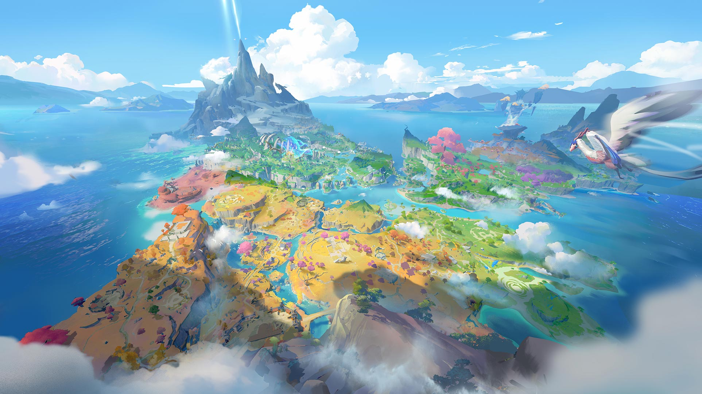

初入山海大陆，面对广袤的地图和凶猛的异兽，很多新手会感到迷茫。为什么别人已经骑上了龙马驹，而你还在被略略汪追着咬？
本期指南将为你盘点开荒期最容易忽视的几个细节。
🛠️ 科技树：工具优先
很多人沉迷抓怪，却忘了升级“天工造物”等级。切记：铁镐和优级葫芦是前期质变的关键。
🐔 劳动力选择：谁是打工皇帝？
不要小看路边随处可见的[菜叶鸡]和[罗汉鼠]！
- 菜叶鸡：前期唯一的牧场产出源。鸡蛋不仅是食物，更是合成高级饲料的必备材料。抓5只放牧场，永远不亏。
- 罗汉鼠：虽然脾气不好，但它是初期少有的拥有[搬运Lv1]和[采矿Lv1]双词条的啾灵。把它扔到矿点，解放你的双手。
🏠 基地选址玄学
千万不要把家安在新手村门口的平原上！那里资源贫瘠且容易被野怪骚扰。
推荐坐标：(190, 670) 号角之丘。这里地势高，拥有两处铁矿刷新点和一片浆果丛，且只有一个入口，易守难攻，是完美的初期据点。
—— 祝各位探险顺利 ——